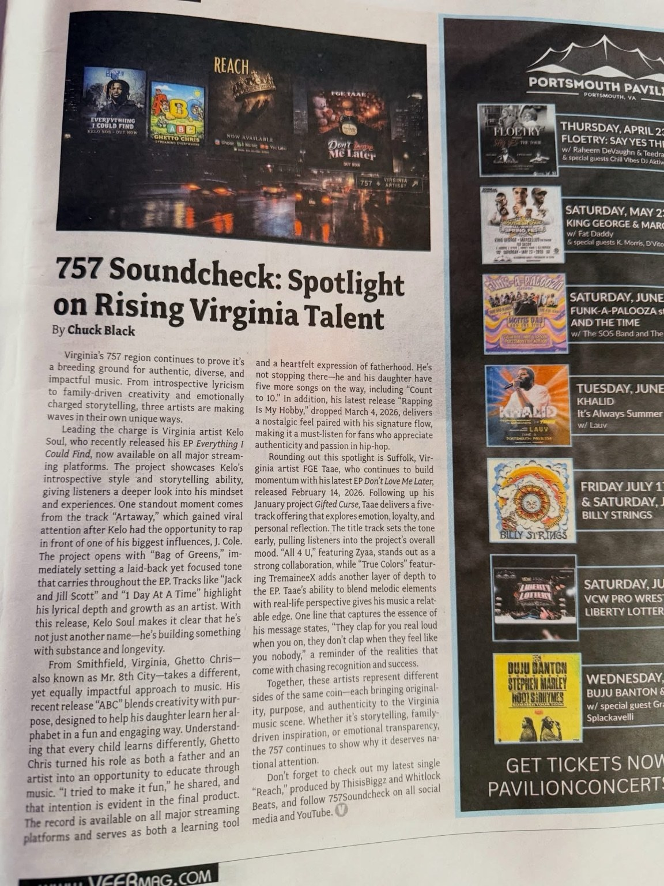

Spotlight on Rising Virginia Talent
Three distinct releases spanning introspection, fatherhood and emotionally driven music.

Read the Full Article
Virginia’s 757 region continues to prove it’s a breeding ground for authentic, diverse, and impactful music. From introspective lyricism to family-driven creativity and emotionally charged storytelling, three artists are making waves in their own unique ways.
Leading the charge is Virginia artist Kelo Soul, who recently released his EP Everything I Could Find, now available on all major streaming platforms. The project showcases Kelo’s introspective style and storytelling ability, giving listeners a deeper look into his mindset and experiences. One standout moment comes from the track “Artaway,” which gained viral attention after Kelo had the opportunity to rap in front of one of his biggest influences, J. Cole. The project opens with “Bag of Greens,” immediately setting a laid-back yet focused tone that carries throughout the EP. Tracks like “Jack and Jill Scott” and “1 Day At A Time” highlight his lyrical depth and growth as an artist. With this release, Kelo Soul makes it clear that he’s not just another name—he’s building something with substance and longevity.
From Smithfield, Virginia, Ghetto Chris—also known as Mr. 8th City—takes a different, yet equally impactful approach to music. His recent release “ABC” blends creativity with purpose, designed to help his daughter learn her alphabet in a fun and engaging way. Understanding that every child learns differently, Ghetto Chris turned his role as both a father and an artist into an opportunity to educate through music. “I tried to make it fun,” he shared, and that intention is evident in the final product. The record is available on all major streaming platforms and serves as both a learning tool and a heartfelt expression of fatherhood. He’s not stopping there—he and his daughter have five more songs on the way, including “Count to 10.” In addition, his latest release “Rapping Is My Hobby,” dropped March 4, 2026, delivers a nostalgic feel paired with his signature flow, making it a must-listen for fans who appreciate authenticity and passion in hip-hop.
Rounding out this spotlight is Suffolk, Virginia artist FGE Taae, who continues to build momentum with his latest EP Don’t Love Me Later, released February 14, 2026. Following up his January project Gifted Curse, Taae delivers a five-track offering that explores emotion, loyalty, and personal reflection. The title track sets the tone early, pulling listeners into the project’s overall mood. “All 4 U,” featuring Zyaa, stands out as a strong collaboration, while “True Colors” featuring TremaineeX adds another layer of depth to the EP. Taae’s ability to blend melodic elements with real-life perspective gives his music a relatable edge. One line that captures the essence of his message states, “They clap for you real loud when you on, they don’t clap when they feel like you nobody,” a reminder of the realities that come with chasing recognition and success.
Together, these artists represent different sides of the same coin—each bringing originality, purpose, and authenticity to the Virginia music scene. Whether it’s storytelling, family-driven inspiration, or emotional transparency, the 757 continues to show why it deserves national attention.
Don’t forget to check out my latest single “Reach,” produced by ThisisBiggz and Whitlock Beats, and follow 757Soundcheck on all social media and YouTube.
As Published in VEER Magazine
Photograph of the original printed article, including the byline and magazine layout.
